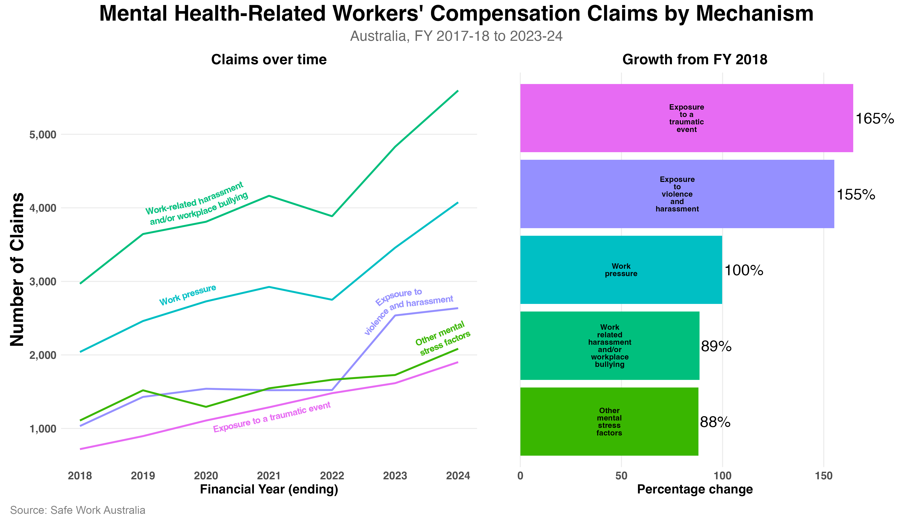

I've posted over the last few months about the rise in both the cost and frequency of mental health-related claims over the past decade in Australia.
What's driving those claims?
The figure below shows the top 5 most common types of mental health claims from FY 2018 to 2024. The left panel shows the number of claims each year. The right panel shows percentage growth from the start to the end of this period.

The figure shows that:
- Work-related harassment and/or workplace bullying is the single biggest driver of mental health claims, and has been across the entire period.
- The fastest growing among these categories is exposure to a traumatic event, up 165%.
- Even the two slowest growing categories, harassment/bullying and other factors, nearly doubled during the period.
Other less common types of claims have also grown sharply since 2018:
- Sexual harassment (778% increase)
- Racial harassment (114% increase)
Claim numbers can be ambiguous though. They could mean these hazards are genuinely becoming more common in workplaces. But they could also reflect growing recognition of psychosocial harm, more willingness to report, and better support for workers who do. Or it could be both.
The problem is that claims data alone can't tell you which of these is the case. The only way to disentangle these explanations is to proactively measure psychosocial safety in your own workforce rather than waiting for the claims to land.
Source: Safe Work Australia